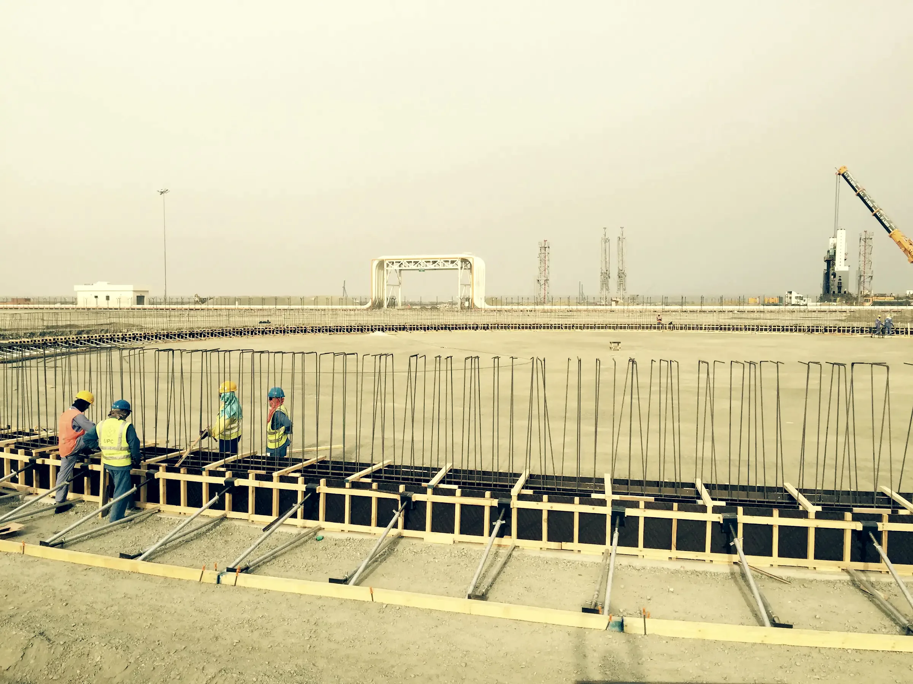
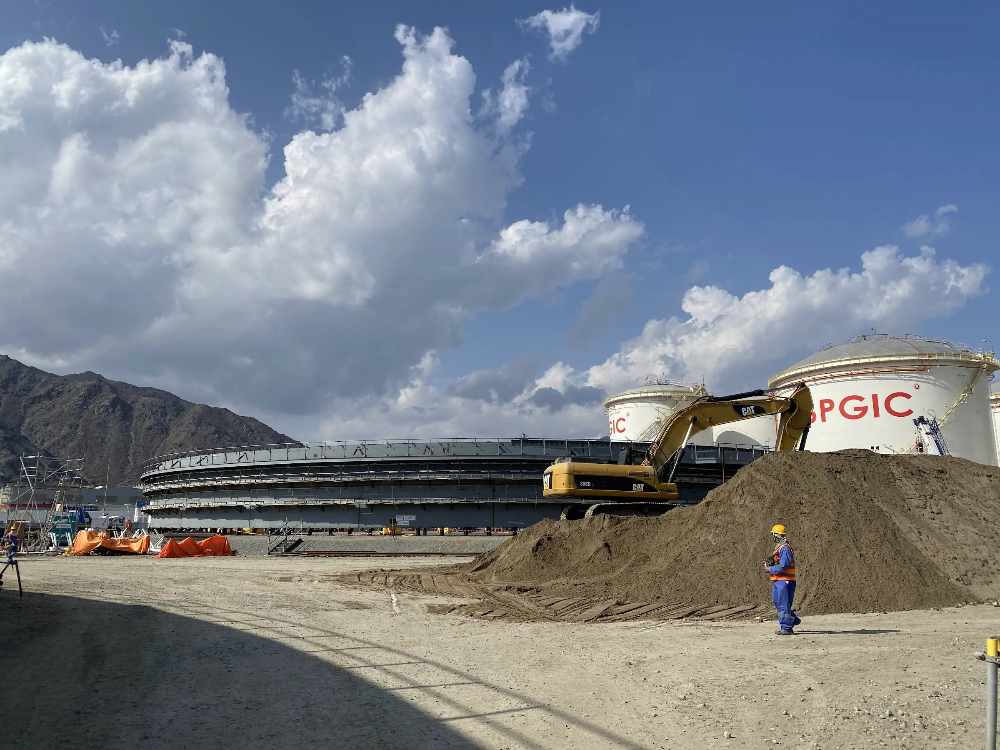
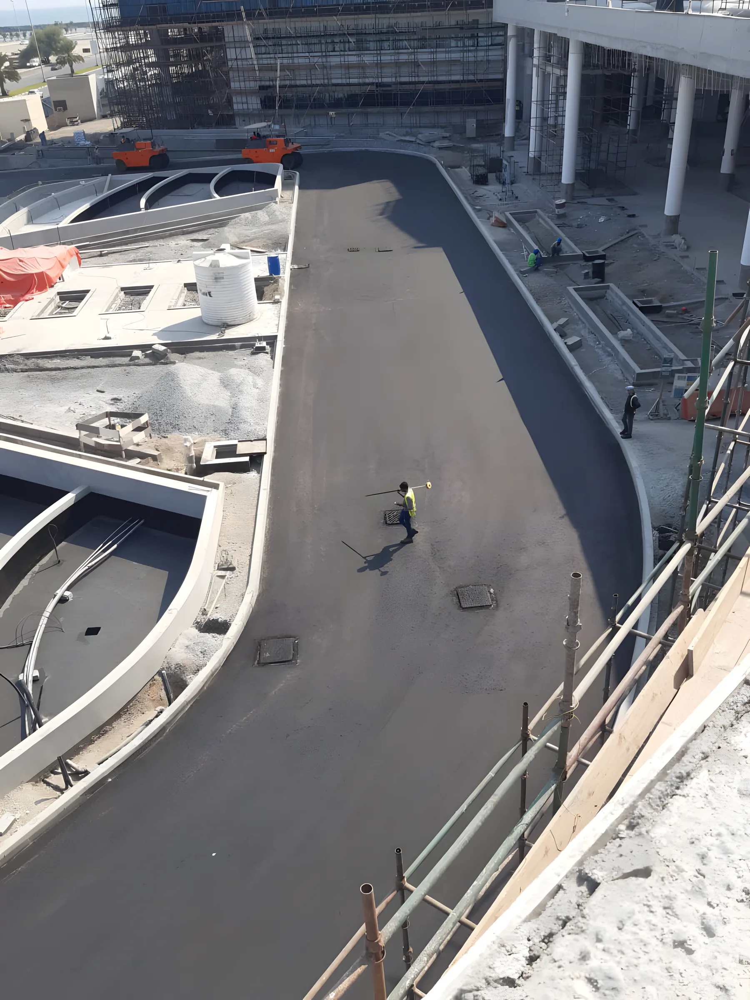
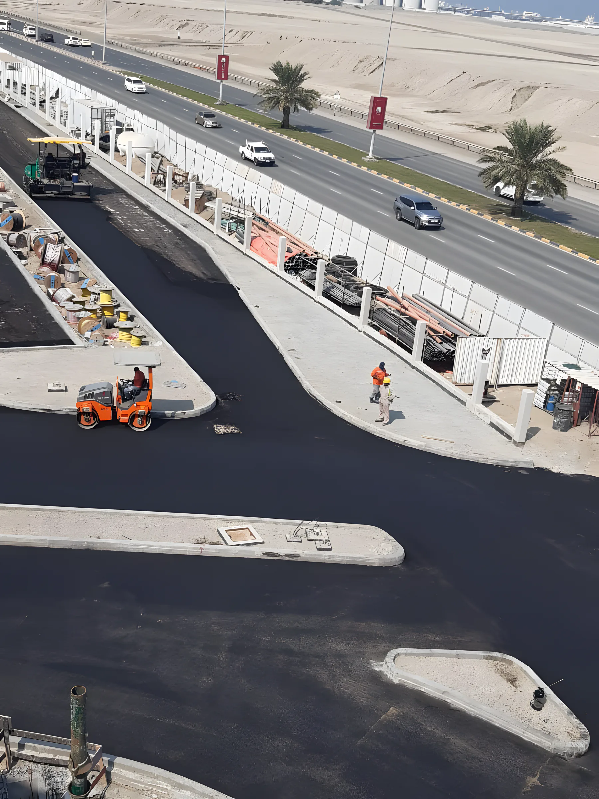
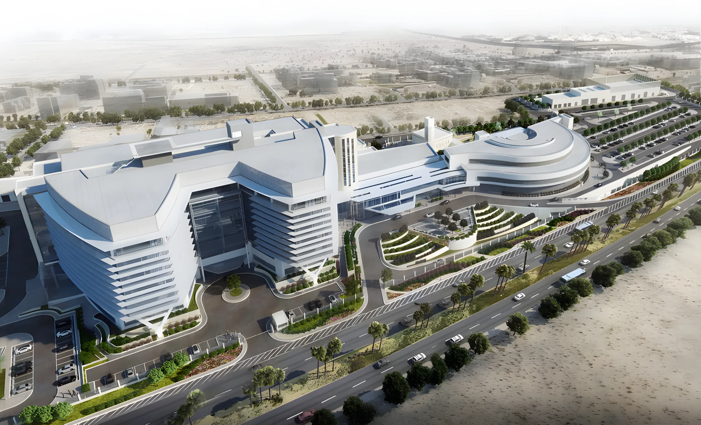
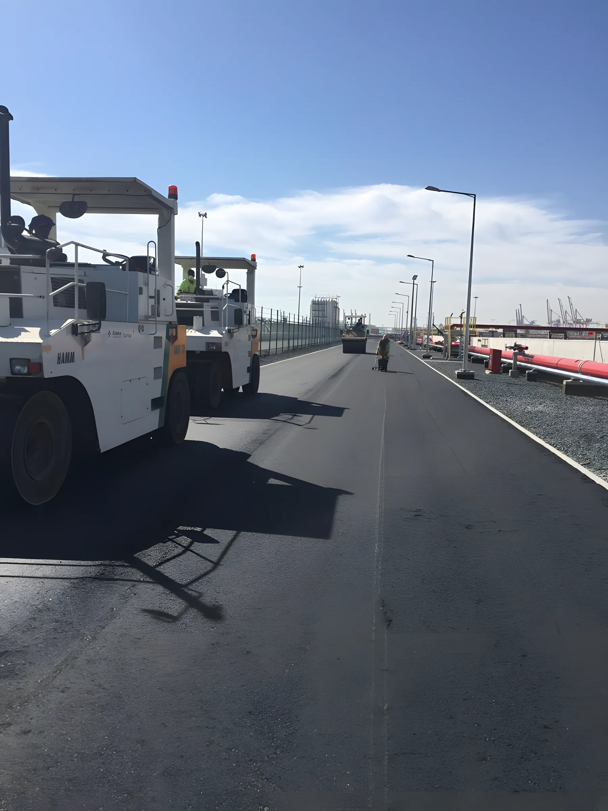
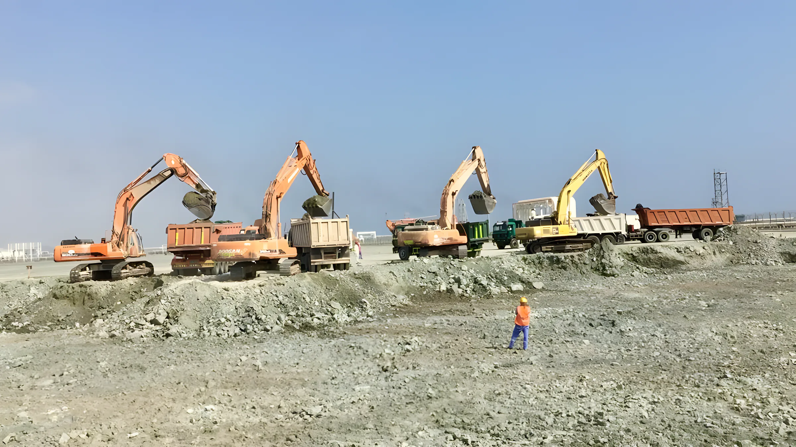
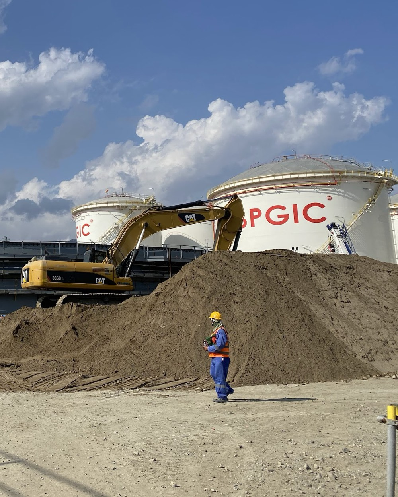

UnitedEngineers
Building and road contractors in Fujairah since 2009. We build roads, dams, tank-farm foundations and buildings across the East Coast, with our own trucks and our own material supply.Road and building contractors in Fujairah since 2009, with our own trucks and material.
Photo BPGIC terminal works, FujairahRock armour along the shoreHamad Bin Abdullah Road, FujairahGoogle 4.5 · 39 reviews

Who we are
Since opening in Fujairah in 2009 we have finished 37 projects in four emirates: roads, dams, tank foundations and buildings for ministries, municipalities, oil terminals and private owners.
United Engineers is a civil contractor based on Hamad Bin Abdullah Road in Fujairah. We take on construction, refurbishment, renovation and maintenance in civil, structural and building works, and finish them on the date in the contract, to the specification and the current codes.
Our own fleet moves the material, our engineers run the sites, and the consultant gets the paperwork they ask for.

Projects
Every finished project on our books: where it is and the consultant on the job. HoverTap a name with a photo tag to see it.
Latest ENOC 1504, FujairahHamad Bin Abdullah RoadBPGIC Fujairah Terminal, Phase 2Dhaid Wild Center, Phase 2Sharjah villas
| No. | Project | Place | Consultant | Type | Photo |
|---|---|---|---|---|---|
| 01 | Sheikh Khalifa Central Hospital Photo | Fujairah | Consolidated Consultant Group | Buildings |  |
| 02 | BPGIC Fujairah Terminal, Phase 1 Photo | Fujairah | MUC | Oil & energy | |
| 03 | EDJ-447 Bridge Photo | Ajman | — | Roads & bridges |  |
| 04 | ADNOC Petrol Station Photo | Fujairah | — | Roads & bridges |  |
| 05 | Wadi Al Ejili Photo | Ras Al Khaimah | — | Water & dams |  |
| 06 | Hamad Bin Abdullah Road | Fujairah | Rafik Khori | Roads & bridges | |
| 07 | Kalba & Wadi Hilow Dams | Kalba, Sharjah | CHSS | Water & dams | |
| 08 | ADP Zoo | Dhaid, Sharjah | Khatib & Alami | Buildings | |
| 09 | Al Hayl Water Tank Service Road | Fujairah | ILF / Transco | Roads & bridges | |
| 10 | VTTI Crude Oil Terminal | Fujairah | Eastern | Oil & energy | |
| 11 | VTTI CPU Area, Fujairah Refinery | Fujairah | Eastern | Oil & energy | |
| 12 | Vopak Horizon Fujairah / Black Pearl | Fujairah | ENOC | Oil & energy | |
| 13 | Widening of Basra Road, Hilton | Fujairah | MOPW | Roads & bridges | |
| 14 | Dhaid Wild Center | Dhaid, Sharjah | MUC | Buildings | |
| 15 | Crusher Service Roads | Fujairah | Fujairah Municipality | Roads & bridges | |
| 16 | 3,000 m² Warehouse, Al Hayl Workshop | Fujairah | Eastern | Buildings | |
| 17 | Al Lehfiah Mountain Wild Center | Kalba, Sharjah | Idroose | Buildings | |
| 18 | Water Supply Distribution Network | Dibba | Transco | Water & dams | |
| 19 | Water Supply Distribution Network | Fujairah | ILF / Transco | Water & dams | |
| 20 | Al Jurf Internal Road Works | Ajman | MOPW | Roads & bridges | |
| 21 | Madhab Internal Works | Fujairah | MOPW | Roads & bridges | |
| 22 | Sakamkam Basin Dams | Fujairah | HSE | Water & dams | |
| 23 | Sewage Treatment Plant | Khorfakkan | MOPW | Water & dams | |
| 24 | Sewage Treatment Plant | Ras Al Khaimah | MOPW | Water & dams | |
| 25 | Fujairah Power Plant | Fujairah | Transco | Oil & energy | |
| 26 | Khorfakkan – Shis Road | Khorfakkan | Halcrow | Roads & bridges | |
| 27 | Sheikh Zayed Grand Mosque | Fujairah | MOPW | Buildings | |
| 28 | Fujairah Airport Road | Fujairah | Idroose | Roads & bridges | |
| 29 | Fujairah – Masafi Road Upgrading | Fujairah | CONSER | Roads & bridges | |
| 30 | Gulf Petrochem Oil Terminal | Fujairah | Eastern | Oil & energy | |
| 31 | HH Sheikh Khalifa Road | Fujairah | CONSER | Roads & bridges | |
| 32 | Kalba Truck Ring Road | Kalba | Idroose | Roads & bridges | |
| 33 | Khorfakkan Truck Ring Road, Phase 2 | Khorfakkan | Halcrow | Roads & bridges | |
| 34 | ENOC Oil Tanks | Fujairah | Eastern | Oil & energy | |
| 35 | Ajman University Parking Area | Fujairah | East Coast | Roads & bridges | |
| 36 | Al Mudafi Internal Roads | Fujairah | Halcrow | Roads & bridges | |
| 37 | Fujairah Mall construction works | Fujairah | ERGA | Buildings |
Showing 12 of 37
On site
Photos from our own sites: tank farms, roads, villas and dams. Drag, swipe or use the arrows.


What we do
Four lines of work, one team, one office in Fujairah.
Roads and streets
New roads, widening, internal roads, truck ring roads, service roads and car parks, from earthworks to the last layer of asphalt.
Details →Building contracting
Villas, warehouses and public buildings, plus refurbishment, renovation and maintenance. Civil and structural works under one contract.
Details →
Transport
Our own trucks and trailers, driven and maintained by our own team, moving material to sites across the Eastern Region.
Details →
Building and road materials
We supply building and road materials to the local industry and deliver them with our own fleet, on the day the site needs them.
Details →Our own machines. Our own trucks.
Excavators, rollers, graders, trucks and trailers that belong to us and are kept by our own technicians, so a site doesn't wait for a hire company.

Quality and safety
What consultants ask for at pre-qualification, ready on file.
- ISO 9001Quality management system, audited by QAQC.
- ISO 14001Environmental management system, audited by QAQC.
- OHSAS 18001Occupational health and safety management, certified by QAQC.
- MinistryQualification certificate from the UAE Ministry of Infrastructure Development.
- Lab testsBuilding materials tested every 3 to 6 months at Fujairah Municipality or a third-party lab.
- Site safetyOur safety engineers visit every site, and each job starts with a safety meeting.

On Google
4.5 from 39 reviews. Three of them, word for word:
One of the best road contractor in east coast area and UAE. Recommended if you are looking for trusted companyThe best choice where you can find the quilified and skilled team. They have ethical standards to meet deadlines.One of the best firm for civil works, head a great experience. Professional staff with high commitmentTendering a road, a tank farm or a villa?
Send the drawings and the BOQ to info@uengineers.com, or call the office and we'll tell you when the price will be ready.
Find the office
Open nowOffice M05, Nama Building, Hamad Bin Abdullah Road, Fujairah
P.O. Box 4055, Fujairah, UAE
| Sunday | 8am–2pm, 6–9pm |
| Monday | 8am–2pm, 6–9pm |
| Tuesday | 8am–2pm, 6–9pm |
| Wednesday | 8am–2pm, 6–9pm |
| Thursday | 8am–2pm, 6–9pm |
| Friday | 8am–2pm |
| Saturday | Closed |
- Office 09 223 5600
- Mobile 050 540 6860
- Fax 09 223 5601
- Email info@uengineers.com